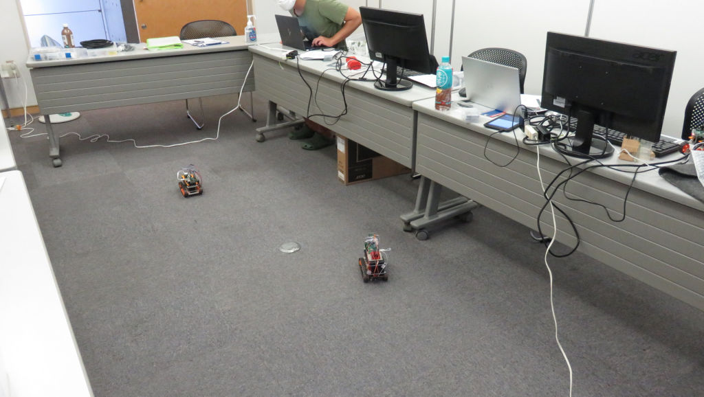
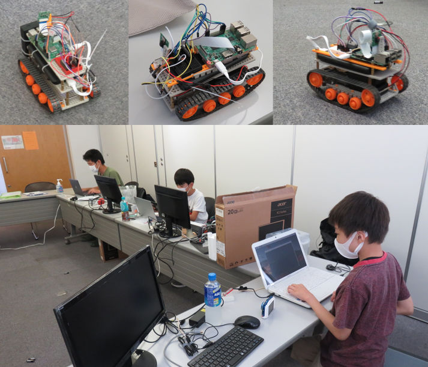

夏休み中に臨時開催
ラズパイでリモート操作するタンクを作る第二回。なんとか夏休み中に、みんなでリモート運転できるところまで進みたいので今月は２回目を臨時開催。コロナ禍での開催につき、メンター１名とニンジャ３名だけでの人数限定開催。ご家族のみなさんも後片付けにご協力いただきありがとうございました。

前回までに車体とキャタピラとラズパイの実装まで進んだので、今回はリモートデスクトップでラズパイにログインして、キーボード操作で「前進・更新・左右回転」の動作までやりきる予定。だったのですが、会議室の床がカーペットのため、摩擦力が大きくてラズタンクが左右旋回するときにキャタピラが外れちゃうこと連発。そして設計者の配慮不足でPWM（パルス制御）が不安定なため、左右のモーター動作にバラつきや出力不足が発生、みんなで悩んでしまいました。
そして設計者は原因を追究すべく、帰宅後も続けて５時間くらい配線図や参考WEBを見てまわり、PWMを安定化させる配線図を発見。実験してみると期待している安定のモータードライブに成功。すぐに、保護者のみなさまにメールでお知らせしたので、夏休み中に再チャレンジしてくれるといいなー🤗
